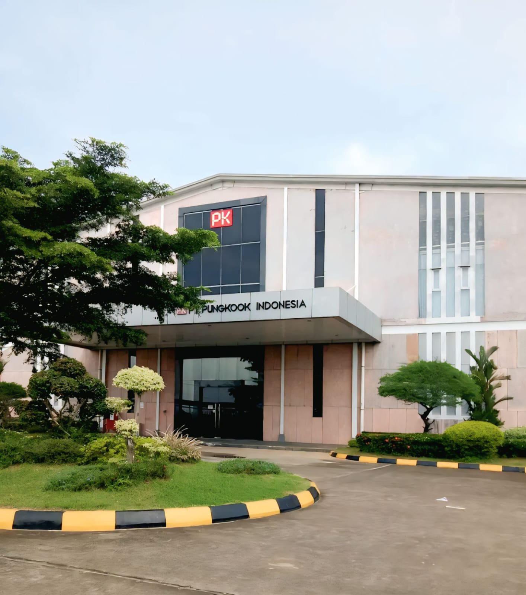

WORK EXPERIENCE
Staff MD Support
PT Pungkook Indonesia One
Juni 2026 – Juli 2026Melaksanakan aktivitas administrasi dan pemeriksaan informasi produksi serta dokumen pengiriman di lingkungan manufaktur.
- Pemeriksaan BOM dan target produksi.
- Pengecekan ketidaksesuaian data.
- Administrasi dokumen packing dan pengiriman.
- Pemeriksaan label dan dokumen pengiriman.
- Koordinasi informasi dengan bagian terkait.